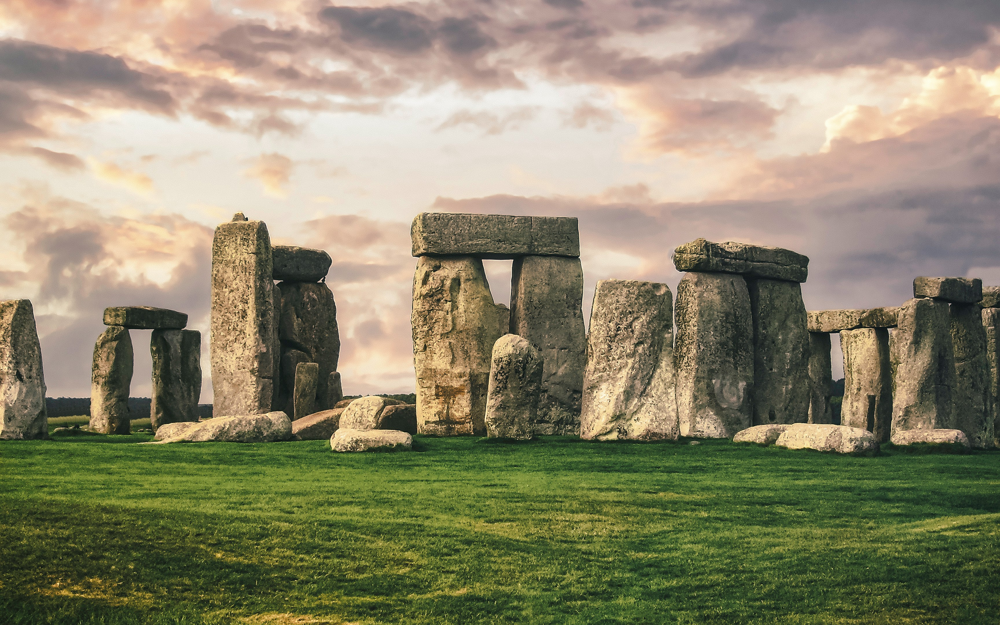

Wessex
England's birthplace
Alfred's old kingdom, redrawn by chalk downs, hillforts and a coastline that's been eroding into view for 185 million years. Wiltshire, Somerset, Dorset and Bournemouth — four counties, bought together.
Start exploring ↓Not on any modern census, but you'll know it when you're in it.
Wessex brings together some of southern England's most treasured landscapes, historic cities and cultural landmarks, from the ancient stones of Stonehenge and the grandeur of Bath to the Jurassic Coast, rolling countryside, vibrant coastal resorts and centuries of history stretching across Wiltshire, Somerset, Dorset, Hampshire and beyond.
That's the Wessex this site follows: not an administrative region, but a way of grouping four counties that share a geology, a culture and people as proud as they're both warm and welcoming.

Wiltshire
Wiltshire is home to some of England's most iconic attractions, from the ancient wonders of Stonehenge and Avebury to the magnificent Salisbury Cathedral, set amid a landscape of rolling countryside, historic market towns and picturesque villages.
Somerset
Somerset offers a rich mix of natural beauty, historic cities and unique landscapes, from the elegant city of Bath and the dramatic Cheddar Gorge to the rolling Mendip Hills, Glastonbury's legendary heritage and the unspoilt wetlands of the Somerset Levels.

Dorset
Dorset is renowned for its stunning Jurassic Coast, golden beaches and charming towns, offering visitors dramatic coastal scenery, iconic landmarks such as Durdle Door and Lulworth Cove, and a rich heritage stretching from prehistoric times to the present day.
Bournemouth
Bournemouth is one of the UK's premier seaside destinations, celebrated for its award-winning beaches, vibrant town centre, beautiful gardens and lively waterfront, making it an ideal base for exploring the Dorset coast.
Four counties. One old name for all of it.
Pick a direction and start walking — the chalk paths mostly connect anyway.